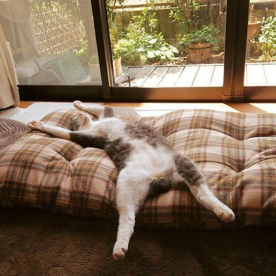
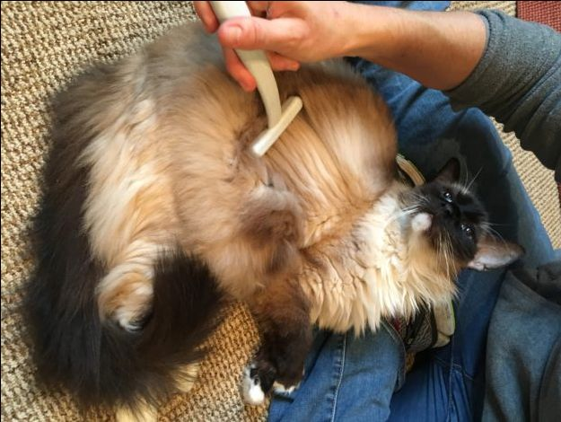
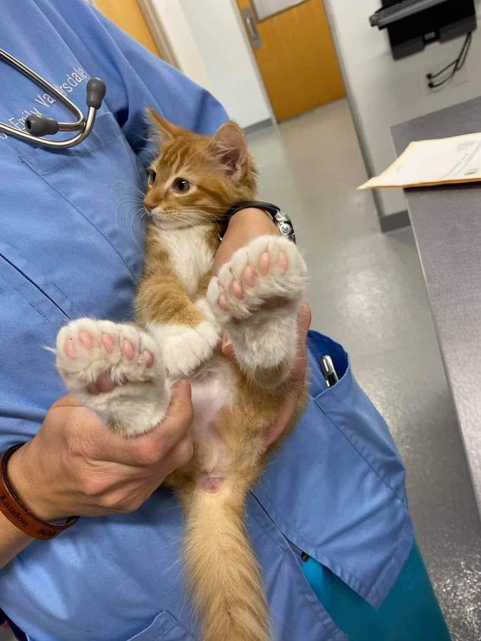
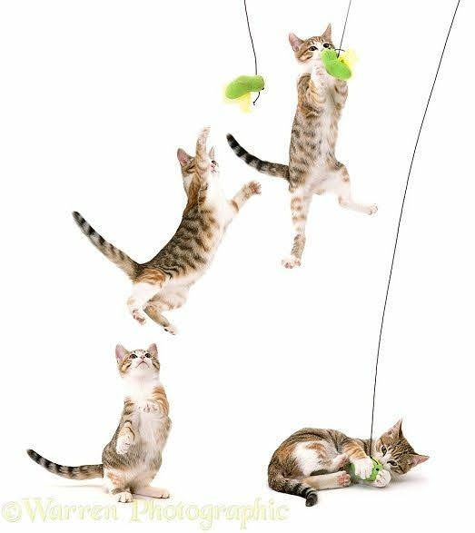
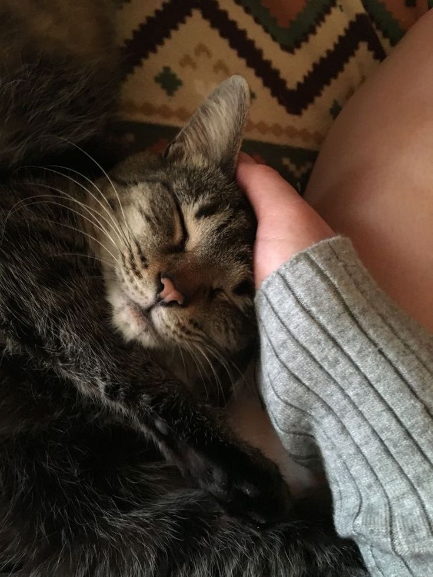

Gatos
CUIDADOS
Entorno Seguro y Cómodo
- Proporciona un espacio tranquilo donde pueda descansar, lejos del bullicio.
- Coloca rascadores para que cuide sus uñas y libere energía.
- Asegúrate de que tenga acceso a zonas elevadas; les encanta observar desde las alturas.

- Limpia su arenero diariamente para evitar malos olores y estrés.
- Cepíllalo regularmente, especialmente si tiene pelo largo, para evitar bolas de pelo.
- Revisa sus oídos, ojos y dientes para detectar problemas a tiempo.

- Vacúnalo según el calendario recomendado y realiza desparasitaciones periódicas.
- Llévalo al veterinario al menos una vez al año para chequeos generales.
- Esterilización o castración ayudan a evitar problemas de comportamiento y de salud.

- Juega con él diariamente usando juguetes interactivos, plumas o pelotas.
- Proporciónale estímulos mentales como juegos de ingenio o cajas para explorar.

- Dedícale tiempo para acariciarlo y fortalecer el vínculo.
- Observa su comportamiento; cualquier cambio podría indicar algún problema.
